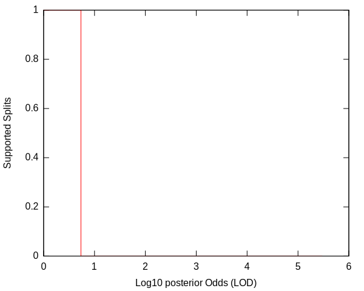
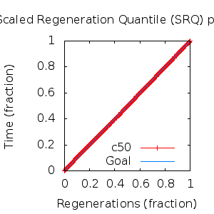
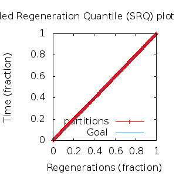

MCMC Post-hoc Analysis: 4 sequences
Data & Model
| Partition | Sequences | Lengths | Alphabet | Substitution Model | Indel Model | Scale Model |
|---|
| 1 |
E5_beta_aa_reduced.fas |
46 - 48 |
Amino-Acids | S1 = lg08+f |
I1 = rs07 |
scale1 ~ gamma[0.5,2] |
Scalar variables
| Statistic | Median | 95% BCI | ACT | ESS | burnin | PSRF-CI80% | PSRF-RCF |
|---|
| prior |
-49.39 |
(-76.06, -33.46) |
14.79 |
18251 |
415
|
1.001 | 0.9987
|
| prior_A1 |
-22.72 |
(-47.7, -14.52) |
7.664 |
35228 |
225
|
1 | 1.001
|
| likelihood |
-416.4 |
(-426.9, -402.8) |
5.786 |
46667 |
130
|
1 | 0.9992
|
| posterior |
-466.2 |
(-486.4, -451.6) |
19.86 |
13596 |
573
|
1 | 1.002
|
| Heat.beta |
1 |
| | | | | |
| Scale[1] |
2.46 |
(0.724, 5.594) |
1.133 |
238386 |
77
|
1 | 1.003
|
| f:pi[A] |
0.02862 |
(0.006948, 0.05856) |
8.632 |
31279 |
279
|
0.9995 | 0.998
|
| f:pi[R] |
0.04817 |
(0.0155, 0.09033) |
8.299 |
32532 |
429
|
1 | 0.993
|
| f:pi[N] |
0.01681 |
(0.0006105, 0.04549) |
9.964 |
27096 |
346
|
1 | 0.9925
|
| f:pi[D] |
0.1016 |
(0.04676, 0.1662) |
8.294 |
32552 |
700
|
1 | 1.005
|
| f:pi[C] |
0.02542 |
(0.0056, 0.05424) |
9.167 |
29455 |
594
|
1 | 1.005
|
| f:pi[Q] |
0.02433 |
(0.003817, 0.05443) |
9.597 |
28132 |
907
|
0.9999 | 1.004
|
| f:pi[E] |
0.0214 |
(0.002451, 0.05002) |
9.312 |
28994 |
669
|
1 | 1.006
|
| f:pi[G] |
0.09482 |
(0.04363, 0.1555) |
8.665 |
31159 |
370
|
1 | 1.001
|
| f:pi[H] |
0.0172 |
(0.00191, 0.04086) |
9.334 |
28925 |
749
|
1 | 0.9955
|
| f:pi[I] |
0.0589 |
(0.03163, 0.09085) |
9.212 |
29310 |
258
|
0.9998 | 0.9995
|
| f:pi[L] |
0.1649 |
(0.1086, 0.227) |
8.214 |
32872 |
370
|
1 | 0.9988
|
| f:pi[K] |
0.03423 |
(0.008944, 0.0684) |
8.528 |
31659 |
300
|
0.9998 | 0.9969
|
| f:pi[M] |
0.02563 |
(0.007867, 0.04877) |
9.015 |
29950 |
354
|
1 | 0.996
|
| f:pi[F] |
0.02321 |
(0.006289, 0.04549) |
9.212 |
29311 |
406
|
1 | 0.9934
|
| f:pi[P] |
0.03534 |
(0.007372, 0.07437) |
8.921 |
30266 |
409
|
1.001 | 0.9959
|
| f:pi[S] |
0.03061 |
(0.006513, 0.06415) |
8.507 |
31740 |
353
|
1 | 0.9999
|
| f:pi[T] |
0.04763 |
(0.01795, 0.08404) |
8.081 |
33410 |
491
|
1 | 1.002
|
| f:pi[W] |
0.01856 |
(0.002324, 0.04436) |
9.721 |
27776 |
592
|
1 | 1.002
|
| f:pi[Y] |
0.0492 |
(0.01777, 0.09019) |
8.337 |
32385 |
265
|
1 | 1.009
|
| f:pi[V] |
0.09113 |
(0.05203, 0.1348) |
7.774 |
34731 |
262
|
0.9998 | 0.9994
|
| rs07:mean_length |
1.648 |
(1, 4.393) |
3.644 |
74097 |
113
|
0.9998 | 1.003
|
| rs07:log_rate |
-4.256 |
(-5.678, -3.175) |
4.46 |
60533 |
111
|
0.9998 | 1.002
|
| |A1| |
49 |
(49, 52) |
6.656 |
40567 |
98 |
0.5 | 1.001
|
| #indels1 |
3 |
(2, 8) |
8.492 |
31794 |
102 |
0.8 | 1
|
| |indels1| |
5 |
(3, 11) |
7.313 |
36920 |
102 |
0.8333 | 1.001
|
| #substs1 |
71 |
(65, 73) |
6.381 |
42311 |
167 |
0.8 | 1.001
|
| Scale1*|T| |
3.021 |
(2.102, 4.17) |
3.368 |
80167 |
182
|
1 | 1.001
|
| |A| |
49 |
(49, 52) |
6.656 |
40567 |
98 |
0.5 | 1.001
|
| #indels |
3 |
(2, 8) |
8.492 |
31794 |
102 |
0.8 | 1
|
| |indels| |
5 |
(3, 11) |
7.313 |
36920 |
102 |
0.8333 | 1.001
|
| #substs |
71 |
(65, 73) |
6.381 |
42311 |
167 |
0.8 | 1.001
|
| |T| |
1.24 |
(0.3533, 2.619) |
1.009 |
267654 |
166
|
1 | 1.001
|
Phylogeny Distribution


Alignment Distribution
Partition 1
|
|
|
Diff |
|
Min. %identity |
# Sites |
Constant |
Informative |
| Initial |
FASTA |
HTML |
Diff |
|
23.9% |
48 |
6 (12.5%) |
2 (4.17%) |
| Best (WPD) |
FASTA |
HTML |
|
AU |
23.9% |
49 |
6 (12.2%) |
3 (6.12%) |
Mixing
Statistics: | scalar burnin | 907 | | scalar ESS | 1.36e+04 | | topological ESS | | | ASDSF | NA | | MSDSF | NA | | PSRF CI80% | 1.001 | | PSRF RCF | 1.009 |
|  |
Analysis
directory: /work/awillemsen/bali-phy/AlphaPVs_E5_aa_new_reduced
version: 3.3
| chain # | burnin | subsample | Iterations (after burnin) | command line | subdirectory |
|---|
| 1 |
10000 |
1 |
90000 |
bali-phy E5_beta_aa_reduced.fas -s 68237 --smodel lg08 -i 100000 -n AlphaPVs_E5_red_beta |
AlphaPVs_E5_red_beta-1 |
| 2 |
10000 |
1 |
90000 |
bali-phy E5_beta_aa_reduced.fas -s 95489 --smodel lg08 -i 100000 -n AlphaPVs_E5_red_beta |
AlphaPVs_E5_red_beta-2 |
| 3 |
10000 |
1 |
90000 |
bali-phy E5_beta_aa_reduced.fas -s 62345 --smodel lg08 -i 100000 -n AlphaPVs_E5_red_beta |
AlphaPVs_E5_red_beta-3 |
| P(data|M) = -424.319 +- 0.065
|
Complete sample: 3
topologies |
95% Bayesian credible interval: 3 topologies |
Model and priors
Tree (+priors)
| topology | ~ uniform on tree topologies |
| branch lengths | ~ iid[num_branches[T],gamma[0.5,div[2,num_branches[T]]]] |
Substitution model (+priors)
| S1 | = |
lg08+f
| f:pi | ~ | dirichlet_on[letters[@a],1]
|
|
Indel model (+priors)
| I1 | = |
rs07
| rs07:log_rate | ~ | laplace[-4,0.707]
|
| rs07:mean_length | ~ | exponential[10,1]
|
|
Scales (+priors)
{kind=link}
{kind=link}
{kind=link}
{kind=link}
{kind=link}
{kind=link}
{kind=link}
{kind=link}